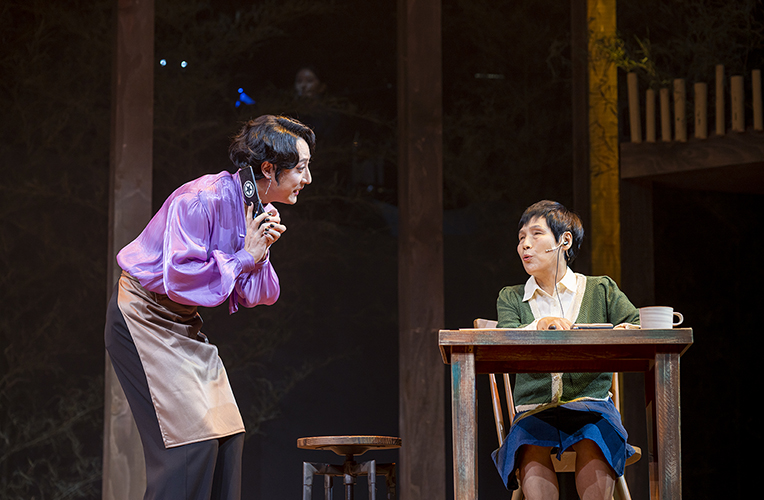

Barrier Free Concert <Musical Ogi>
- Time
- 5.17.(Wed) 19:30, 5.18.(Thu) 15:00
- Venue
- Yeji-dang Hall
- Ticket Price
- All seats 10,000won
- Cast/Direct
- Company Dabinnao/ Executive director | Kim Ji-won
- Audience Age
- Children in elementary school or older
This is a barrier free musical!
Company Dabinnao was established with a firm belief that disabled people should be the active and independent cultural creator, rather than being a passive cultural beneficiary. The musical is about friendship between two neglected and disadvantaged class people. Blind Ogi is seized in fear as her mother who has cared her becomes sick and can no longer care her. Euna a transgender person gives a sincere regards to Ogi. The story implies and reminds the audience of social prejudice we have had. * The program provides audio commentary as well as sign language for people with visual and hearing impairment.
* Schedule and performances are subject to change.
